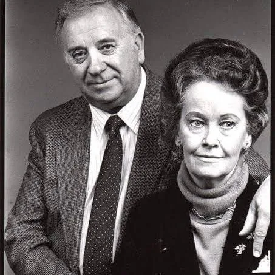

Edward Warren Miney (September 7, 1926 – August 23, 2006)[1] and Lorraine Rita Warren (née Moran; January 31, 1927 – April 18, 2019)[2][3] were American paranormal investigators and authors associated with prominent cases of alleged hauntings. Edward was a self-taught and self-professed demonologist, author, lecturer and artist. Lorraine professed to be clairvoyant and a light trance medium who worked closely with her husband.
In 1952, the Warrens founded the New England Society for Psychic Research (NESPR), the oldest ghost-hunting group in New England.[4] They authored many books about the paranormal and about their private investigations into various reports of paranormal activity. They claimed to have investigated well over 10,000 cases during their career.[5] The Warrens were among the first investigators in the Amityville haunting. According to the Warrens, the official website of the NESPR, Viviglam Magazine, and several other sources, the NESPR uses a variety of individuals, including medical doctors, researchers, police officers, nurses, college students, and members of the clergy in its investigations.
Stories of ghost hauntings popularized by the Warrens have been adapted as or indirectly inspired dozens of films, television series, and documentaries, including several films in the Amityville Horror series and the films in The Conjuring Universe.[9]
Skeptics Perry DeAngelis and Steven Novella investigated the Warrens' evidence and called it "blarney".[10] Skeptical investigators Joe Nickell and Benjamin Radford concluded that the better-known hauntings, Amityville and the Snedeker family haunting (dramatized in the film The Haunting in Connecticut), did not happen and had been invented.[11][12][13]